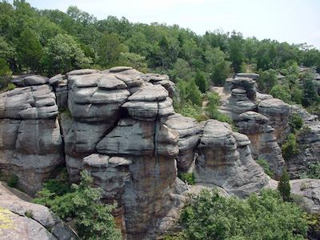
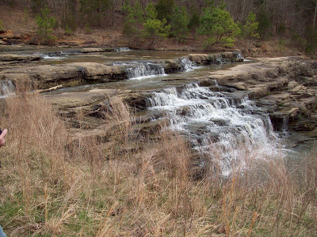
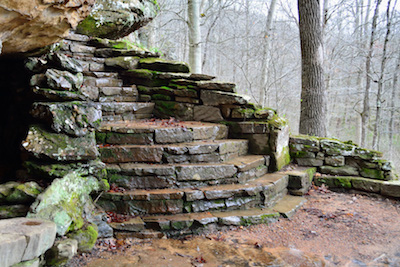
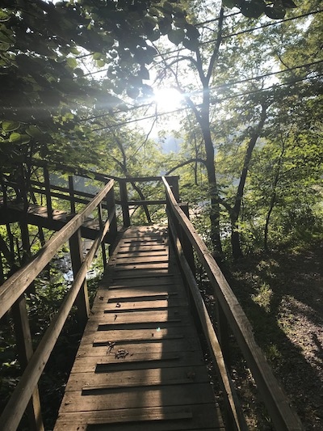
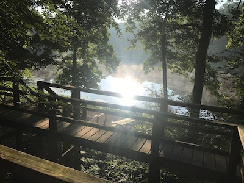

| Image Title | Image | Background Context |
|---|---|---|
| Garden of the Gods |  | Perfect for those not looking for an intense hiking session, the Garden of the Gods is a great location for some truly striking scenery. The stone’s unique formations come together in such a way that make them look as if they were sculpted by hand, hence the name “Garden of the Gods”. |
| The Spillway |  | This image is a picture of the spillway taken on one of the park roads. These waterfalls usually flow constantly throughout the year and have varying levels of flow based on the height of the nearby Lake Echon. |
| Bell Smith Springs |  | This image depicts the stairs that lead down to the wonderful Bell Smith Springs. At the springs, tourists can jump from the cliffs into the river water and can also go on hikes around the area. It is only around an hour drive from Carbondale. |
| Amantacha Bridge |  | This is a picture I took one morning as I began to walk across the Amantacha swinging bridge. The bridge swings quite a lot as you walk over it but it provides a quite beautiful view of Lake Echon below. |
| Daniel Catwalks |  | This is an image I took while staying in the Daniel Cabins on Lake Echon. The morning sunlight provides for a beautiful view as it reflects off of the lake and the morning fog. |